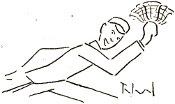
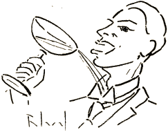
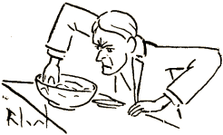

En vagonar' ... Tra l' koridor'
La subkelner' rapidas
Kaj sonorilon kun fervor'
Faklerte li agitas;
Per majstra sving':
Glingling'... glingling'...
Ĝi estas la signalo.

Samkiel tigroj, al regalo
La malsatantoj el la kaĝo
Sin premas, puŝas, vin kontuzas
Kaj iom honte sin ekskuzas:
„Necesas manĝi dum vojaĝo!“
Tagmanĝo-hor', ― stomako-hor'...
La manĝavida procesi'
Pilgrimas tra la koridor'
Al la vagonrestoraci'.
Tangante aŭ Vit-dance,
Skuate kaj balance
Sed tamen kun obstino
Vi trapenetras lerte
Ĝis... ĉarma solulino. ―
― (Ĉe ŝia tablo, certe,
En la vagonrestoraci'
Naskiĝos am-konversaci'.) ―
Sed tie en la manĝvagon'
La ĉefkelner' ordonas;
Arbitre, jes, ― ne laŭ bezon',
Sidlokojn li disdonas.
Li ŝin sidigas sen demand'
Ĉe tablo nur duloka
Izole apud juna dand'
Afekte tro provoka,
Dum vin li ŝovas, ve-ho-ve!
Kun trio de la Sav-Arme'...
Nun komenciĝas la ĵonglad'
Per fork', tranĉilo kaj kuler',
Kaj nur perfekta akrobat'
Sin nutri povas sen sufer',
Ĉar pro la sku' de l' vagonar'
Moviĝas via manĝilar'.
La supteler' kun vermiĉel'
Turniĝas kiel karusel', ―
Se fine vi ĝin paralizas,
Jen la botelo mobilizas
Kaj via glaso improvizas
Vetkuron al najbara glas'
Dum la kelnero en ekstaz'
Germane diras: „Was ist das? “ (1)
* * *
Kaj malfacile estas plu
Atingi al la buŝotru'.
Nu, vere, perkulere
Ne ŝajnas tro danĝere,
Sed per la fork' kun dentoj pikaj
La provoj estas pli komplikaj
Kaj celmaltrafe
Preterpafe
Vi tuŝas meze de la vang',
El kiu fluas varma sang'
Dum la kelner' kun interes'
Hispane krias: „ !Eso es! “ (2)
Por trinki sekvas nun ekzerc'
Simila al malbona ŝerc',
Ĝis fine, je la kvina prov',
La glason vi sukcese levas
Kaj ĝojas pri la buŝotrov'
Kaj jam pri bona trinko revas,
Sed ĉar tunelo vin englutas,
Vi nun baraktas en mallum'
Kaj vian plenan glason ŝutas
En apertaĵon de l' kolum'
Dum la kelner' ― (aŭ kiu ajn) ―
Demandas angle: „Does it rain?“ (3)

La glason vi formetas honte
Kaj ĵuras, ke de nun, estonte
Vi ne plu trinkos sub tunel',
Eĉ ne el suĉbotel'...
Nu, fine, oni nun eliras
El la tunelo kaj ... vi miras,
Ĉar dum mallum' vi metis glason
En la teleron de najbar'
Kaj pardonpete pri l' fuŝfar'
Vi nun... renversas lian tason
Dum la kelner', post inventar',
Konstatas france: „ Quel bazar! “ (4)
La vagonaro malrapidas,
Eĉ haltas tempon ĉe staci';
Ĉi tiun tempon vi profitas
Por nutri vin sen rotaci'.
Entute estas tre agrable
Sidadi firme apudtable ...
Bruanta skuego!
Skuanta bruego!
Alarmparol':
„Ĉu karambol'?“
Konfuz',
Kontuz', ―
Ĉar sen averto, sen signal',
Laŭ manier' de kanibal'
Kaj laŭ sistemo de barbar'
Kun la dormema vagonar'
Kontaktis ĵus lokomotiv'!
Sufiĉas tiu ĉi motiv',
Por ke nazumo via tuj
Fordronu en la kompotuj' ...
Silente nun kaj kun metod'
Vi fiŝkaptadas en kompot'
Por savi ĝin de la pere'
Sur fundo kompotuja,
Dum tiuj de la Sav-Arme'
Hebree kantas: „ Haleluja! “

Refoje jam vi povas miri,
Ĉar vi konstatas ĵus, ke vi
Forgesis ja malsupreniri
Dum lasta halto ĉe l' staci'!
Kaj la kelnero provas blagi
En Esperanto: „ Volu pagi! “
* * *
Digesta hor', siesta hor',
La ŝveloventra procesi'
Formigras tra la koridor'
El la vagonrestoraci'...